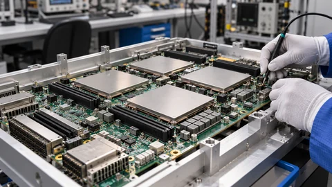
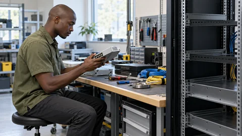

Tech & AI
China’s Tech Giants Reportedly Order $35 Billion in Nvidia Cards
ByteDance, Alibaba and Tencent are seeking workstation GPUs. Reported orders show demand for AI capacity, but deliveries and revenue remain uncertain.
ByteDance, Alibaba and Tencent are seeking workstation GPUs. Reported orders show demand for AI capacity, but deliveries and revenue remain uncertain.
A reported early investment by Google's former CEO highlights the value and uncertainty surrounding private AI companies ahead of possible public listings.

Apple has announced a Los Angeles event for October 28. Reports point to new Macs, but the invitation does not confirm hardware specifications.

Financing guarantees can obscure AI infrastructure exposure. S&P sees no immediate need to change ratings, but investment returns remain the central risk.

TorchNeuron brings native PyTorch workflows to Trainium. Easier migration could widen hardware choice, but cost savings still depend on the workload.

A new investigation documents automated intrusions at scale. Confirmed access, possible data theft and the cost of remediation remain distinct questions.

The Claude developer plans a share commitment subject to stockholder approval. Governance details and the timetable for spending remain open.

The documentary’s distributor is appealing a reported permanent TikTok suspension, putting attention on the boundary between film promotion and political advertising.

Meta revised commercial terms after concerns over website scraping. Its clarification narrows the stated purpose, while the dispute over AI training rights remains.

China proposes controls on 12 solar manufacturing technologies, with immediate registration requirements and consultation on the draft running to November 15.
The coding platform’s preferred partnership leaves room for competing models. Its documentation shows why the default and the available choices are different decisions.
Shopping and booking assistants face a constraint that better models cannot solve alone: permission to use the services their customers depend on.
Reporting and explainers from the full archive.